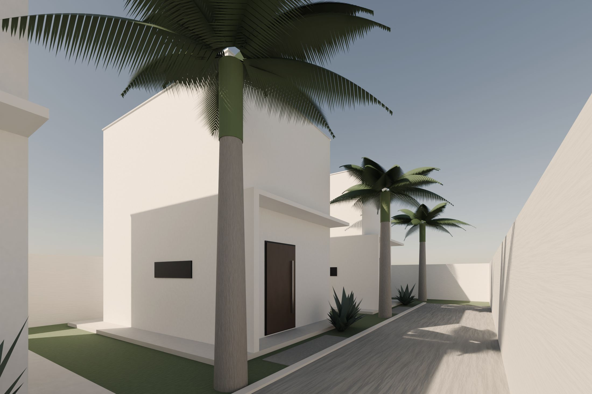
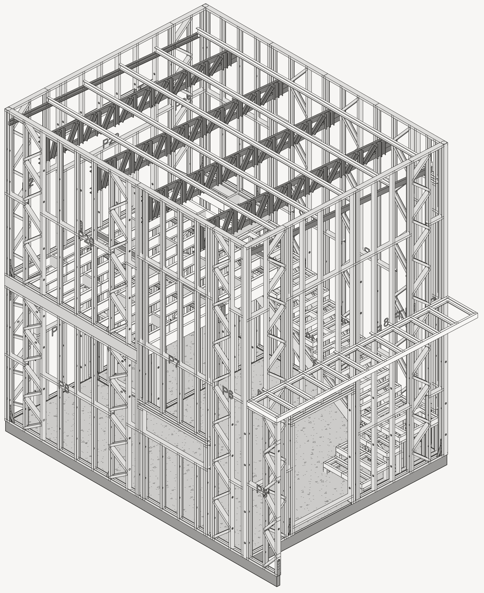

obras / estruturas
Le Blanc Lofts

Três lofts com mezanino em light steel frame, projetados para fabricação fora do canteiro.
- Local
- Angra dos Reis, RJ
- Unidades
- 3 lofts de 28,90 m², com térreo e mezanino
- Sistema
- Light steel frame, fabricado fora do canteiro
- Escopo
- Projeto estrutural em steel frame
- Etapa
- Projeto · 2026
Estrutura

